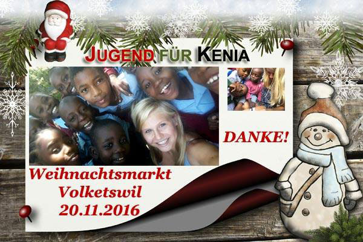
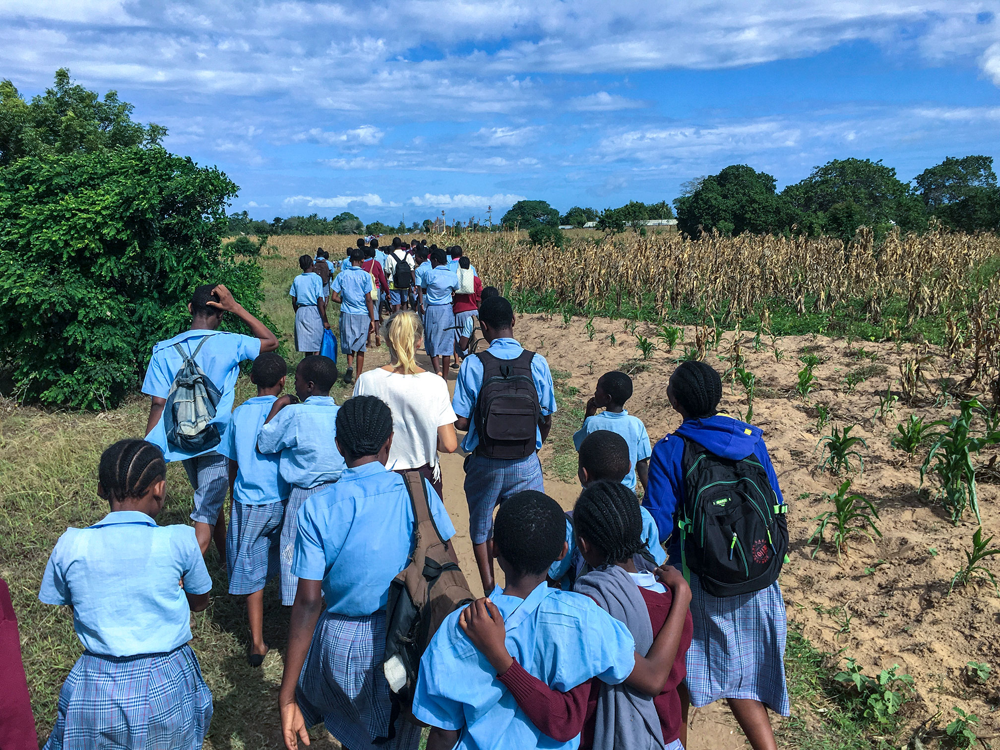

Gemeinsam können wir viel bewegen. Also lasst uns Kindern und Jugendlichen in Kenia an der Kilifi Vonwald School
helfen, denn sie haben ein Recht auf ein menschenwürdiges Leben wie du und ich!
Aktuelle DRINGENDE Projekte
Schulbücher (CHF 3’500.-)
25%
Toilette für Krankenstation (CHF 3,500.-)
40%
Wiederkehrende Projekte
Essenspakete CHF 25.-
Betten mit Matratzen und Moskitonetzen CHF 135.-
Schulbücher CHF
170.- pro
Jahr
Schul-Gebühren CHF 25.- pro Monat
Solarlampen CHF 27.-
Dichtes
Dach CHF 2'200.-

Abgeschlossene Projekte
Im November 2016 habe ich am Martini Märt in Rümlang bei einem Stand meiner Grosseltern eine „Spendedose“
aufgestellt und Geld gesammelt. (Einnahmen CHF 114.-)
Eine Woche später war ich mit Freunden am Chlaus-Märt in Volketswil. Wir haben selbstgebackene Kuchen und
Cup
Cakes sowie Tee verkauft. (Einnahmen CHF 1’198.-)
Mein Abschlussprojekt der 3. Sekundarstufe von Januar bis Juni 2017 „Wirtschaft und Soziales“

Ich hatte mir drei Projektziele gesetzt:
Unternehmen zum Spenden gewinnen
Ich kontaktierte Geschäftsführer von umliegenenden und bat sie um einen persönlichen Termin. So stellte
ich
ihnen „Jugend für Kenia“ und meine Philosophie, etc. Und natürlich fragte ich sie, ob sie einen gewissen
Betrag
spenden wollen. Einige Geschäftsleiter waren sehr offen und fanden meine Idee toll. Und dann gab es auch
noch
die andern… Sie sagten mir, ich hätte keine Ahnung wie die Welt wirklich aussieht und dass meine
Initiative
nichts bringen wird. Diese Aussagen haben mich sehr geschockt.
Mit Klassen Spendenläufe und Klassenprojekte machen
Mit den Turnlehrern vom Sekundarschulhaus Lindenbüel in Volketswil habe ich Spendenläufe für ihre
Turnstunden
organisiert. Diese wurden mit 4 Klassen durchgeführt. Einer Klasse aus dem Schulhaus Feldhof in
Volketswil, habe
ich verschiedene Klassenprojekt vorgestellt und auch sie haben sich für einen Spendenlauf entschieden,
damit sie
Geld für Kleiderboxen sammeln können.
Einen Stand machen und z.B. Kuchen, etc. zu verkaufen
Am Volketswiler-Fussballcamp 2017 an Auffahrt wurde im Festzelt Kuchen, Kaffee, Früchte und Getränke
verkauft
wovon ein Teil der an Jugend für Kenia ging.
Die Gesamteinahmen meines Schulprojektes: CHF 3’453.70